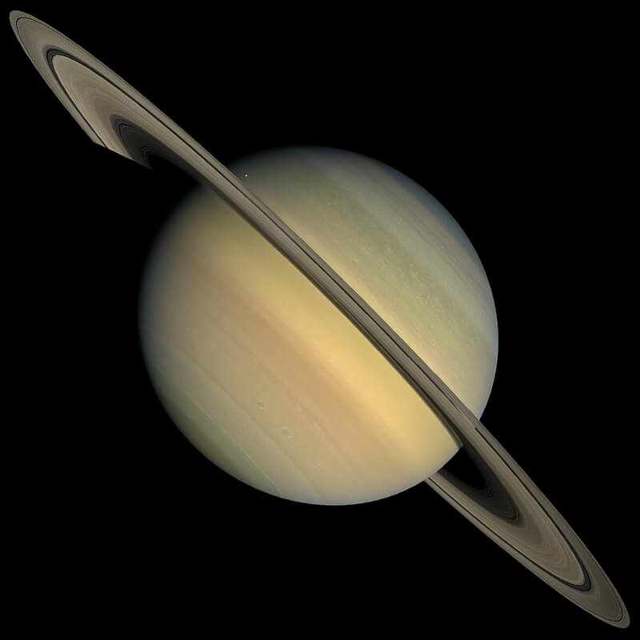
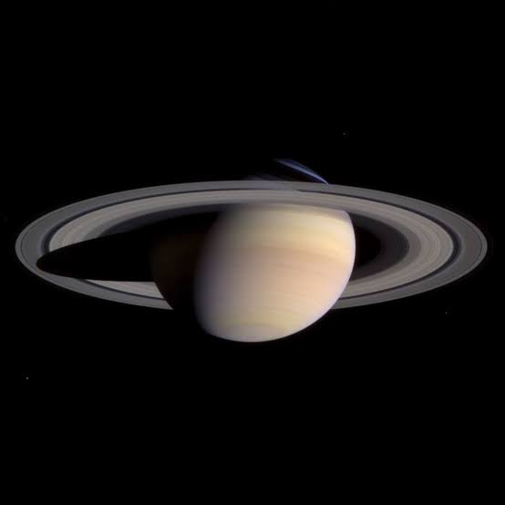

Saturn
The Ringed World


Five Facts About Saturn
- Saturn is the sixth planet from the Sun.
- It is the second-largest planet in our solar system, after Jupiter.
- Saturn's rings are made mostly of water ice, mixed with rocky material and dust.
- Saturn's average density is lower than the density of water.
- Titan is Saturn's largest moon and has a thick atmosphere.
Build Saturn's Rings
Saturn's famous rings are divided into several regions. Switch three of its main rings on and off to compare their positions.
Showing 3 of 3 rings: C, B, A.